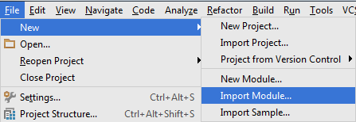

Table of Contents
Laborator 07. Invocarea de Servicii Web prin Protocolul HTTP
Protocolul HTTP
De multe ori, funcționalitatea pe care o pun la dispoziție aplicațiile Android este preluată din alte surse, datorită limitărilor impuse de capacitatea de procesare și memorie disponibilă ale unui dispozitiv mobil. O strategie posibilă în acest sens este utilizarea HTTP, pentru interogarea unor servicii web, al căror rezultat este de cele mai multe ori oferit în format JSON sau XML. De asemenea, descărcarea unor resurse se poate face prin inspectarea codului sursă al unor pagini Internet (documente HTML), în urma acestei operații detectându-se locația la care acestea sunt disponibile.
HTTP (Hypertext Transfer Protocol) este un protocol de comunicație responsabil cu transferul de hipertext (text structurat ce conține legături) dintre un client (de regulă, un navigator) și un server web, interacțiunea dintre acestea (prin intermediul unei conexiuni TCP persistente pe portul 80) fiind reglementată de RFC 2616. HTTP este un protocol fără stare, pentru persistența informațiilor între accesări fiind necesar să se utilizeze soluții adiacente (cookie, sesiuni, rescrierea URL-urilor, câmpuri ascunse).
Principalele concepte cu care lucrează acest protocol sunt cererea și răspunsul.
- cererea este transmisă de client către serverul web și reprezintă o solicitare pentru obținerea unor resurse (identificate printr-un URL); aceasta conține denumirea metodei care va fi utilizată pentru transferul de informații, locația de unde se găsește resursa respectivă și versiunea de protocol;
- răspunsul este transmis de serverul web către client, ca rezultat al solicitării primite, incluzând și o linie de stare (ce conține un cod care indică dacă starea comenzii) precum și alte informații suplimentare

Structura unei Cereri HTTP
O cerere HTTP conține una sau mai multe linii de text ASCII, precedate în mod necesar de denumirea metodei specificând operația ce se va realiza asupra conținutului respectiv:
| DENUMIRE METODĂ | DESCRIERE |
|---|---|
GET | descărcarea resursei specificate de pe serverul web pe client; majoritatea cererilor către un server web sunt de acest tipGET /page.html HTTP/1.1 Host: www.server.com |
HEAD | obținerea antetului unei pagini Internet, pentru a se verifica parametrii acesteia sau doar pentru a testa corectitudinea unui URL |
PUT | încărcarea resursei specificate de pe client pe serverul web (cu suprascrierea acesteia, în cazul în care există deja); trebuie specificate și datele de autentificare, utilizatorul respectiv trebuind să aibă permisiunile necesare pentru o astfel de operașie |
POST | transferul de informații de către client cu privire la resursa specificată, acestea urmând a fi prelucrate de serverul webPOST /page.html HTTP/1.1 Host: www.server.com attribute1=value1&...&attributen=valuen |
DELETE | ștergerea resursei specificate de pe serverul web, rezultatul operației depinzând de permisiunile pe care le deține utilizatorul ale cărui date de autentificare au fost transmise în antete |
TRACE | solicitare de retransmitere a cererii primite de serverul web de la client, pentru a se testa corectitudinea acesteia |
CONNECT | rezervat pentru o utilizare ulterioară |
OPTIONS | interogare cu privire la atributele serverului web sau ale unei resurse găzduite de acesta |
Cel mai frecvent, se utilizează metodele GET (folosită implicit, dacă nu se specifică altfel) și POST.
GET vs. POST
Deși atât metoda GET cât și metoda POST pot fi utilizate pentru descărcarea conținutului unei pagini Internet, transmițând către serverul web valorile unor anumite atribute, între acestea există anumite diferențe:
- o cerere
GETpoate fi reținută în cache, fapt ce nu este valabil și pentru o cererePOST; - o cerere
GETrămâne în istoricul aplicației de navigare, fapt ce nu este valabil și pentru o cererePOST; - o cerere
GETpoate fi reținută printre paginile Internet favorite din cadrul programului de navigare, fapt ce nu este valabil și pentru o cererePOST; - o cerere
GETimpune unele restricții cu privire la lungimea (maxim 2048 caractere) și la tipul de date (doar caractere ASCII) transmise (prin URL), fapt ce nu este valabil și pentru o cererePOST; - o cerere
GETnu trebuie folosită atunci când sunt implicate informații critice (acestea fiind vizibile în URL), fapt ce nu este valabil și pentru o cererePOST; - o cerere
GETar trebui să fie folosită doar pentru obținerea unei resurse, fapt ce nu este valabil și pentru o cererePOST.
O linie de cerere HTTP poate fi succedată de unele informații suplimentare, reprezentând antetele de cerere, acestea având forma atribut:valoare, fiind definite următoarele proprietăți:
User-Agent- informații cu privire la browser-ul utilizat și la platforma pe care rulează acesta- informații cu privire la conținutul pe care clientul îl dorește de la serverul web, având capacitatea de a-l procesa; dacă serverul poate alege dintre mai multe resurse pe care le găzduiește, va alege pe cele care respectă constrângerile specificate, altfel întoarce un cod de eroare
Accept- tipul MIMEAccept-Charset- setul de caractereAccept-Encoding- mecanismul de codificareAccept-Language- limba
Host(obligatoriu) - denumirea gazdei pe care se găsește resursa (specificată în URL); necesară întrucât o adresă IP poate fi asociată mai multor nume de DNSAuthorization- informații de autentificare în cazul unor operații care necesită drepturi privilegiateCookie- transmite un cookie primit anteriorDate- data și ora la care a fost transmisă cererea
Structura unui Răspuns HTTP
Un răspuns HTTP este format din linia de stare, antetele de răspuns și posibile informații suplimentare, conținând o parte sau toată resursa care a fost solicitată de client de pe serverul web.
În cadrul liniei de stare este inclus un cod din trei cifre care indică dacă solicitarea a putut fi îndeplinită sau nu (situație în care este indicată și cauza).
| FAMILIE DE CODURI | SEMNIFICAȚIE | DESCRIERE |
|---|---|---|
| 1xx | Informație | răspuns provizoriu, constând din linia de stare și alte antete (fără conținut, terminat de o linie vidă), indicând faptul că cererea a fost primită, procesarea sa fiind încă în desfășurare; nu este utilizată în HTTP/1.0 |
| 2xx | Succes | răspuns ce indică faptul că cererea a fost primită, înțeleasă, acceptată și procesată cu succes |
| 3xx | Redirectare | răspuns transmis de serverul web ce indică faptul că trebuie realizate acțiuni suplimentare din partea clientului (cu sau fără interacțiunea utilizatorului, în funcție de metoda folosită) pentru ca cererea să poată fi îndeplinită; în cazul în care redirectarea se repetă de mai multe ori, se poate suspecta o buclă infinită |
| 4xx | Eroare la client | răspuns transmis de serverul web ce indică faptul că cererea nu a putut fi îndeplinită, datorită unei erori la nivelul clientului; mesajul include și o entitate ce conține o descriere a situației, inclusiv tipul acesteia (permanentă sau temporară) |
| 5xx | Eroare la server | cod de răspuns ce indică clientului faptul că cererea nu a putut fi îndeplinită, datorită unei erori la nivelul serverului web; mesajul include și o entitate ce conține o descriere a situației, inclusiv tipul acesteia (permanentă sau temporară) |
Mesajul conține și antetele de răspuns, având forma atribut:valoare, fiind definite următoarele proprietăți:
Server- informații cu privire la mașina care găzduiește resursa care este transmisă- informații cu privire la proprietățile conținutului care este transmis
Content-Encoding- mecanismul de codificareContent-Language- limbaContent-Length- dimensiuneaContent-Type- tipul MIME
Last-Modified- ora și data la care pagina Internet a fost modificatăLocation- informație prin care serverul web informează clientul de faptul că ar trebui folosit alt URL (resursa a fost mutată sau trebuie accesată o pagină Internet localizată în funcție de anumite preferințe)Accept-Ranges- informație referitoare la transmiterea conținutului solicitat în mai multe părți, corespunzătoare unor intervale de octețiSet-Cookie- transmiterea unui cookie de la serverul web la client, acesta trebuind să fie inclus în antetele ulterioare ale mesajelor schimbate între cele două entități
Mecanisme pentru Comunicația prin HTTP în Android
Clasa HttpURLConnection
În Android, comunicația dintre un server web si un client poate fi gestionată prin intermediul clasei HttpURLConnection, care pune la dispoziție aceleași funcționalități ca în cazul Java SE.
O aplicație ce utilizează această clasă presupune implementarea următoarelor etape:
- instanțierea unui obiect URL prin intermediul căruia pot fi obținute informații cu privire la resursa respectivă (protocolul utilizat, mașina pe care se găsește resursa respectivă, portul pe care poate fi accesată, fișierul accesat, referința vizualizată):
getProtocol()- furnizează protocolul utilizat, în acest caz,http;getHost()- indică adresa mașinii care găzduiește resursa respectivă;getPort()- întoarce portul pe care s-a realizat comunicația:- valoarea -1 este specifică pentru situația în care nu s-a precizat un port în mod explicit;
- valoarea 80 este transmisă numai în cazul în care aceata este specificată ca atare în adresa furnizată.
getFile()- specifică calea de la care este obținută resursa;getRef()- precizează referința din cadrul paginii HTML (de regulă, de tip ancoră) care a fost solicitată.
- deschiderea unei conexiuni, printr-un apel al metodei
openConnection(); metoda întoarce un obiect de tipURLConnectioncare poate fi convertit laHttpURLConnectionprin care se oferă acces la:- antetele de cerere:
setRequestMethod(),setRequestProperty(String, String); - antetele de răspuns, inclusiv linia de stare:
getResponseCode(),getHeaderFields(),getResponseMessage(); - informații referitoare la mecanismele de gestiune a stării (cookie-uri) - în condițiile în care HTTP este un protocol fără stare; se utilizează clasele CookieManager, CookieHandler, care gestionează la nivelul întregii mașini virtuale obiectele de tipul HttpCookie.
- utilizarea unui flux de intrare / flux de ieșire pentru transferul de informații; se folosesc, obiectele / metodele:
BufferedInputStream/getInputStream();BufferedOutputStream/getOutputStream()- în acest caz, trebuie apelată metodasetDoOutput()cu parametrultrue, împreună cu metodele care evită reținerea conținutului într-o zonă tampon (consumând astfel memorie inutilă și având un impact asupra latenței):setFixedLengthStreamingMode()- atunci când dimensiunea conținutului este cunoscută în prealabil;setChunkedStreamingMode()- atunci când dimensiunea conținutului nu este cunoscută
- închiderea conexiunii, prin intermediul metodei
disconnect(), se face de regulă pe clauzafinallya unui bloctry-catchpe care sunt gestionate operațiile ce implică comunicația prin rețea; scopul pentru care este utilizată aceasta metodă este dat de posibilitatea de reutilizare a resurselor folosite de conexiune (sockeți TCP), dacă proprietateahttp.keepAlivenu specifică altfel.
HttpURLConnection folosește metoda GET. Metoda POST este utilizată numai în situația în care a fost apelată în prealabil metoda setDoOutput(true).
Celelalte metode (OPTIONS, HEAD, PUT, DELETE, TRACE) pot fi utilizate numai în situația în care sunt specificate explicit ca parametru al funcției setRequestMethod().
private class WebPageKeywordSearchAsyncTask extends AsyncTask<String, Void, String> { @Override protected String doInBackground(String... params) { HttpURLConnection httpURLConnection = null; StringBuilder result = new StringBuilder(); String error = null; try { String webPageAddress = params[0]; String keyword = params[1]; if (webPageAddress == null || webPageAddress.isEmpty()) { error = "Web Page address cannot be empty"; } if (keyword == null || keyword.isEmpty()) { error = "Keyword cannot be empty"; } if (error != null) { return error; } URL url = new URL(webPageAddress); result.append("Protocol: " + url.getProtocol() + "\n"); result.append("Host: " + url.getHost() + "\n"); result.append("Port: " + url.getPort() + "\n"); result.append("File: " + url.getFile() + "\n"); result.append("Reference: " + url.getRef() + "\n"); result.append("==========\n"); URLConnection urlConnection = url.openConnection(); if (urlConnection instanceof HttpURLConnection) { httpURLConnection = (HttpURLConnection)urlConnection; BufferedReader bufferedReader = Utilities.getReader(httpURLConnection); int currentLineNumber = 0, numberOfOccurrencies = 0; String currentLineContent; while ((currentLineContent = bufferedReader.readLine()) != null) { currentLineNumber++; if (currentLineContent.contains(keyword)) { result.append("line: " + currentLineNumber + " / " + currentLineContent+"\n"); numberOfOccurrencies++; } } result.append("Number of occurrencies: " + numberOfOccurrencies+"\n"); return result.toString(); } } catch (MalformedURLException malformedURLException) { Log.e(Constants.TAG, malformedURLException.getMessage()); if (Constants.DEBUG) { malformedURLException.printStackTrace(); } } catch (IOException ioException) { Log.e(Constants.TAG, ioException.getMessage()); if (Constants.DEBUG) { ioException.printStackTrace(); } } finally { if (httpURLConnection != null) { httpURLConnection.disconnect(); } } return null; } @Override public void onPostExecute(String result) { resultsTextView.setText(result); } }

android.os.NetworkOnMainThreadException.
AndroidManifest.xml trebuie specificată permisiunea de acces la rețea:<uses-permission android:name=“android.permission.INTERNET” />.
O practică curentă este de a verifica codul de răspuns transmis de a accesa fluxul de intrare asociat resursei respective. Astfel, numai în situația în care valoarea întoarsă de metoda getResponseCode() este HttpURLConnection.HTTP_OK se poate continua procesarea conținutului stocat la URL-ul accesat.
Apache HTTP Components
Apache HTTP Components este un proiect open-source, dezvoltat sub licență Apache, punând la dispoziția utilizatorilor o bibliotecă Java pentru accesarea de resurse prin intermediul protocolului HTTP. Funcționalitatea poate fi utilizată în cadrul oricărei mașini virtuale Java și era inclusă și în platforma Android până în API Level 23 (Marshmellow) când a fost exclusă, fiind invocate probleme legate de compatibilitate pentru anumite platforme precum și utilizarea excesivă a rețelei cu impact asupra consumului de energie. În schimb, se recomandă utilizarea clasei HttpURLConnection care asigură compresia datelor (în mod transparent pentru utilizator!) precum și folosirea unui cache. Cu toate acestea, proiectul Apache HTTP Components este în continuă dezvoltare și folosit pe scară largă.
Componentele Apache HTTP Components sunt:
- HttpCore este un set de componente de transport care pot fi utilizate pentru dezvoltarea de servicii robuste, la nivel de server și client; sunt implementate atât un model blocant pentru operații de intrare/ieșire (bazat pe
java.io) cât și un model asincron, bazat pe evenimente (bazat pejava.nio); - HttpClient este o implementare a unui agent compatibil cu HTTP/1.1 care oferă funcționalități pentru autentificare la nivel de client, pentru gestiunea stării și a conexiunii;
- HttpAsyncClient este un modul complementar destinat situațiilor în care se dorește să se ofere suport pentru un număr mare de conexiuni concurente, parametrii precum nivelul de transfer al datelor nu sunt foarte importante.
Pentru ca metodele din API-ul Apache HTTP Components să poată fi utilizate într-o aplicație Android ce utilizează API Level este necesar să se specifice utilizarea bibliotecii corespunzătoare, în fișierul build.gradle:
- build.gradle
... android { compileSdkVersion 23 buildToolsVersion "23.0.2" useLibrary 'org.apache.http.legacy' } ...
Conform API-ului Apache HTTP Components, conexiunile HTTP sunt gestionate mai ales prin intermediul clasei HttpClient, care oferă suport complet pentru acest protocol de comunicație. Frecvent, ca implementare a acestei interfețe se utilizează DefaultHttpClient.
Un astfel de obiect poate folosit pentru transmiterea unor cereri de tip GET (HttpGet) sau POST (HttpPost) și prelucrarea răspunsurilor corespunzătoare.
Metoda GET este folosită pentru obținerea conținutului unei pagini Internet stocată la o anumită adresă.
Pașii care trebuie urmați pentru realizarea unei astfel de cereri HTTP sunt:
- instanțierea unui obiect de tipul
HttpClient; - instanțierea unui obiect de tipul
HttpGetavând ca parametru adresa serverului web ce conține resursa care se dorește a fi descărcată; - realizarea propriu-zisă a cererii HTTP prin apelul metodei
execute()a obiectuluiHttpClient, ce primește ca parametru obiectul de tipHttpGet(încapsulând tipul metodei folosite și locația care va fi interogată).
try { HttpClient httpClient = new DefaultHttpClient(); HttpGet httpGet = new HttpGet("http://www.server.com"); HttpResponse httpGetResponse = httpClient.execute(httpGet); HttpEntity httpGetEntity = httpGetResponse.getEntity(); if (httpGetEntity != null) { // do something with the response Log.i(Constants.TAG, EntityUtils.toString(httpGetEntity)); } } catch (Exception exception) { Log.e(Constants.TAG, exception.getMessage()); if (Constants.DEBUG) { exception.printStackTrace(); } }
Alternativ, poate fi utilizat un obiect de tip ResponseHandler (cu implementarea BasicResponseHandler) care va fi transmis ca parametru metodei execute(), astfel încât rezultatul acesteia să fie un șir de caractere conținând resursa care se dorește a fi descărcată.
// ... ResponseHandler<String> responseHandler = new BasicResponseHandler(); String content = httpClient.execute(httpGet, responseHandler); // ...
În situația în care se dorește transmiterea de parametri către serverul web, aceștia trebuie incluși în URL (în clar), fără a se depăși limita de 2048 de caractere și folosind numai caractere ASCII:
// ... HttpGet httpGet = new HttpGet("http://www.server.com?attribute1=value1&...&attributen=valuen"); // ...
Metoda POST este folosită atunci când se dorește generarea unui conținut de către serverul web pe baza unor informații transmise de client. Aceste date - având forma unei liste de tip (atribut, valoare) - vor fi incluse în conținutul mesajului în loc de a fi integrate în cadrul URL-ului.
Pașii care trebuie urmați pentru realizarea unei astfel de cereri HTTP sunt:
- instanțierea unui obiect de tipul
HttpClient; - instanțierea unui obiect de tipul
HttpPostavând ca parametru adresa serverului web ce conține resursa care se dorește a fi descărcată; - definirea unei liste de perechi de tip (atribut, valoare) (de tip
List<NameValuePair>) care vor conține informațiile transmise de client pe baza cărora serverul web va genera conținutul; - atașarea datelor respective la obiectul de tip
HttpPost(apelând metodasetEntity()) prin intermediul unei entități UrlEncodedFormEntity care primește ca parametru informațiile ce trebuie transmise și mecanismul de codificare a datelor; - realizarea propriu-zisă a cererii HTTP prin apelul metodei
execute()a obiectuluiHttpClient, ce primește ca parametru obiectul de tipHttpPost(încapsulând tipul metodei folosite, datele care se doresc a fi transmise și locația care va fi interogată).
try { HttpClient httpClient = new DefaultHttpClient(); HttpPost httpPost = new HttpPost("http://www.server.com"); List<NameValuePair> params = new ArrayList<NameValuePair>(); params.add(new BasicNameValuePair("attribute1", "value1")); // ... params.add(new BasicNameValuePair("attributen", "valuen")); UrlEncodedFormEntity urlEncodedFormEntity = new UrlEncodedFormEntity(params, HTTP.UTF_8); httpPost.setEntity(urlEncodedFormEntity); HttpResponse httpPostResponse = httpClient.execute(httpPost); HttpEntity httpPostEntity = httpPostResponse.getEntity(); if (httpPostEntity != null) { // do something with the response Log.i(Constants.TAG, EntityUtils.toString(httpPostEntity)); } } catch (Exception exception) { Log.e(Constants.TAG, exception.getMessage()); if (Constants.DEBUG) { exception.printStackTrace(); } }
Prelucrarea unui răspuns HTTP se poate realiza:
- prin prelucrarea obiectului de tip HttpEntity, utilizând fluxuri de intrare/ieșire:
BufferedReader bufferedReader = null; StringBuilder result = new StringBuilder(); try { // ... bufferedReader = new BufferedReader(new InputStreamReader(httpEntity.getContent())); int currentLineNumber = 0; String currentLineContent; while ((currentLineContent = bufferedReader.readLine()) != null) { currentLineNumber++; result.append(currentLineNumber).append(": ").append(currentLineContent).append("\n"); } Log.i(Constants.TAG, result.toString()); } catch (Exception exception) { Log.e(Constants.TAG, exception.getMessage()); if (Constants.DEBUG) { exception.printStackTrace(); } } finally { if(bufferedReader != null) { try { bufferedReader.close(); } catch (IOException ioException) { Log.e(Constants.TAG, exception.getMessage()); if (Constants.DEBUG) { ioException.printStackTrace(); } } } }
- utilizând un obiect de tip
ResponseHandler, ce furnizează conținutul resursei solicitate, transmis ca parametru al metodeiexecute()a claseiHttpClient(pe lângă obiectulHttpGet|HttpPost)
Volley
Volley este o bibliotecă open-source (disponibilă prin intermediul Android Open-Source Project) ce oferă facilități pentru interogarea de resurse disponibile prin intermediul protocolului HTTP.
Câteva dintre facilitățile puse la dispoziție de această platformă sunt:
- gestiune automată a cererilor (implementare sistem de priorități, posibilitate de manipulare a cererilor concurente, funcționalitate pentru anulare a unei cereri transmise anterior);
- utilizarea transparentă a unui sistem de caching implementat atât în memorie cât și pe discul local;
- posibilitatea de implementare a unor mecanisme specifice pentru retransmitere;
- implementarea de operații de tip RPC (Remote Procedure Call) executate asincron pentru popularea conținutului unor elemente din interfața grafică;
- utilitare pentru depanare.
Volley nu este adecvat pentru operații de intrare / ieșire intensive tocmai datorită sistemului de caching, conținutul resurselor solicitate fiind menținut în memorie în vederea realizării operației de procesare a acestuia.
Pentru utilizarea bibliotecii Volley este necesar să se realizeze următoarele operații:
- descărcarea codului sursă de la depozitul unde este întreținută
student@eim2016:~$ git clone https://android.googlesource.com/platform/frameworks/volley
- referirea proiectului ca bibliotecă în Android Studio
- File → New → Import Module… 
- indicarea locației la care au fost descărcate sursele în prelabil și o denumire a proiectului (tipic,
:volley) sub care va fi referit - specificarea dependenței față de acest proiect precum și faptul că este necesar ca acesta să fie compilat
- build.gradle
... dependencies { compile fileTree(dir: 'libs', include: ['*.jar']) testCompile 'junit:junit:4.12' compile 'com.android.support:appcompat-v7:23.1.1' compile 'com.android.support:design:23.1.1' compile project(':volley') }
- dacă pentru Volley se folosește API Level 23, este necesar să se utilizeze biblioteca
org.apache.http.legacyîntrucât implementarea sa utilizează Apache HTTP Components.- build.gradle
android { ... useLibrary 'org.apache.http.legacy' ... }
Volley gestionează o structură de date RequestQueue care are rolul de a controla modul în care sunt tratate cererile. Aceasta distribuie cererile care trebuie procesate concurent către firele de execuție care se ocupă de comunicația prin rețea, realizând de asemenea interogarea informațiilor care se regăsest în cache. Există două moduri în care poate fi construit un obiect de tip RequestQueue:
Volley.newRequestQueue(Context)- construiește o coadă de cereri folosind implementările standard pentru implementarea mecanismului de cache și a comunicației prin rețea:DiskBasedCache: pentru fiecare răspuns care a fost solicitat prin intermediul unei cereri se construiește un fișier dedicat, căruia îi corespunde un index stocat în memorie;BasicNetwork: implementează funcționalitate de transport folosind un client HTTP (tipic, un obiectHttpURLConnection);
Volley.newRequestQueue(Cache, Network)permite utilizarea unui mecanism de cache și a unei modalități de transmisie prin rețea ai căror comportament și parametri sunt definiți de utilizator.
O coadă de cereri implementează următoarele metode:
add()- transmite o cerere care este inițial verificată de firul de execuție care verifică cache-ul astfel încât dacă răspunsul există stocat, va fi furnizat fără a se mai realiza comunicația prin reșea; în caz contrar, el va fi plasat în coada gestionată de firele de execuție responsabile de comunicația prin rețea, acesta fiind preluat în momentul în care unul dintre acestea devine disponibil;cancel()- anulează o cerere care a fost transmisă anterior, împiedicând să se obțină un răspuns pe baza sa (metoda este invocată pe obiectulRequest);cancelAll()- anulează toate cererile care au atașată o anumită etichetă, specificată prin intermediul metodeisetTag(); o astfel de abordare poate fi utilă atunci când o activitate nu mai este vizibilă (pe metodaonStop()) astfel încât să nu se mai proceseze răspunsuri care nu pot fi afișate; în acest fel, utilizatorul este scutit să verifice dacă instanța activității există sau nu pe metodele de callback apelate în mod automat în momentul în care resursa solicitată devine disponibilă sau în momentul în care s-a produs o excepție.
Este recomandat ca la nivelul unei aplicații Android care utilizează comunicația prin rețea folosind protocolul HTTP să se utilizeze o singură instanță a unui obiect de tip RequestQueue a cărui durată de viață se întinde pe întreaga perioadă de execuție. Abordarea cea mai adecvată este utilizarea unei clase Singleton care conține un obiect de tip RequestQueue precum și alte funcționalități Volley, dacă este necesar.
- VolleyController.java
import android.content.Context; import com.android.volley.Request; import com.android.volley.RequestQueue; import com.android.volley.toolbox.Volley; public class VolleyController { private static VolleyController instance; private static Context context; private RequestQueue requestQueue; private VolleyController(Context context) { this.context = context; this.requestQueue = getRequestQueue(); } public static synchronized VolleyController getInstance(Context context) { if (instance == null) { instance = new VolleyController(context); } return instance; } public RequestQueue getRequestQueue() { if (requestQueue == null) { requestQueue = Volley.newRequestQueue(context.getApplicationContext()); } return requestQueue; } public <T> void addToRequestQueue(Request<T> request) { getRequestQueue().add(request); } }
newRequestQueue() trebuie să se refere la contextul aplicației, de accea se utilizează metoda getApplicationContext().
Volley folosește mai multe fire de execuție:
- firul de execuție principal (al interfeței grafice), prin intermediul căruia este trimisă o cerere și pe care este primit răspunsul (pentru a fi vizualizat, de regulă, în cadrul interfeței grafice);
- firul de execuție responsabil cu implementarea mecanismului de caching, care verifică dacă există un răspuns pentru cerere, astfel încât să nu mai fie necesară comunicația prin rețea; în momentul în care este disponibil un răspuns pentru o cerere, aceasta este indexată tot de acest fir de execuție;
- mai multe fire de execuție care realizează comunicația prin rețea, care trimit o cerere și primesc un răspuns pe care îl procesează (operațiile de parsare sau codificare/decodificare necesită resurse și o perioadă de timp considerabilă).
O utilizare tipică Volley (algoritmul pe care îl utilizează această platformă) este următoarea:
- firul de execuție principal plasează o cerere în coadă
- firul de execuție responsabil cu implementarea mecanismului de caching verifică dacă există un răspuns pentru cerere
- dacă răspunsul pentru cerere se află în cache
- se citește răspunsul din cache
- se scrie rezultatul către firul de execuție principal
- dacă răspunsul pentru cerere NU se află în cache
- se transmite cerere în coadă
- un fir de execuție care realizează comunicația prin rețea trimite cererea, atunci când devine disponibil, preluând răspunsul
- răspunsul este stocat în cache, după ce poate suferi procesări ulterioare (parsare, codificare/decodificare)
- se scrie rezultatul către firul de execuție principal
Volley definește mai multe tipuri de cerere standard, în funcție de tipul de date pe care îl are resursa care va fi accesată prin intermediul protocolului HTTP:
- StringRequest furnizează un rezultat de tip șir de caractere, în orice format, folosind un mecanism de codificare;
- ImageRequest întoarce o resursă de tip imagine, disponibilă la o anumită locație (URL), aceasta fiind transmisă sub formă de bitmap decodificat (și posibil redimensionat, dacă se solicită acest lucru); operațiile costisitoare sunt realizate de firele de execuție responsabile de comunicația prin rețea;
- ImageLoader oferă funcționalitatea de gestiune a cache-ului, care este stocat în memorie (dacă s-ar fi utilizat discul local, ar fi existat un impact asupra firului de execuție principal), transmițând mai multe resurse la un moment dat;
- NetworkImageView reprezintă un tip de element al interfeței grafice, specializat pentru resurse de tip imagine disponibilă la o locație la distanță, accesibilă prin intermediul comunicației în rețea.
- JsonRequest suportă două implementări:
În situația în care se dorește implementarea unui tip de cerere definită de utilizator, trebuie să se respecte câteva condiții:
- clasa trebuie să fie derivată din Request<T>;
- clasa trebuie să implementeze metodele:
parseNetworkResponse(NetworkResponse)care construiește rezultatul (Response.success(), respectivResponse.error()) în funcție de răspunsul primit;deliverResponse(T)care apelează metoda de callback (onResponse(T)) atunci când răspunsul este disponibil.
- CustomJSONRequest.java
public class CustomRequest<T> extends Request<T> { private Map<String, String> params; private Response.Listener<T> responseListener; private Response.ErrorListener errorListener; private Class<T> classType; public CustomRequest(String url, Map<String, String> params, Response.Listener<T> responseListener, Response.ErrorListener errorListener, Class<T> classType) { this(Method.GET, url, params, responseListener, errorListener, classType); } public CustomRequest(int method, String url, Map<String, String> params, Response.Listener<T> responseListener, Response.ErrorListener errorListener, Class<T> classType) { super(method, url, errorListener); this.params = params; this.responseListener = responseListener; this.errorListener = errorListener; this.classType = classType; } @Override protected Map<String, String> getParams() throws AuthFailureError { return params; } @Override protected Response<T> parseNetworkResponse(NetworkResponse networkResponse) { try { String response = new String(networkResponse.data, HttpHeaderParser.parseCharset(networkResponse.headers)); if (classType.equals(JSONObject.class)) { return Response.success((T)new JSONObject(response), HttpHeaderParser.parseCacheHeaders(networkResponse)); } if (classType.equals(JSONArray.class)) { return Response.success((T)new JSONArray(response), HttpHeaderParser.parseCacheHeaders(networkResponse)); } return null; } catch (UnsupportedEncodingException unsupportedEncodingException) { return Response.error(new ParseError(unsupportedEncodingException)); } catch (JSONException jsonException) { return Response.error(new ParseError(jsonException)); } } @Override protected void deliverResponse(T jsonObject) { responseListener.onResponse(jsonObject); } @Override public void deliverError(VolleyError volleyError) { errorListener.onErrorResponse(volleyError); } }
Pentru definirea unui obiect de tip Request este necesar să se precizeze următoarele elemente:
- metoda folosită pentru transmiterea cererii, definită de
Request.Method; - locația (URL-ul) la care se găsește resursa care se dorește să fie accesată prin protocolul HTTP;
- parametrii cererii;
- metodele de callback
Response.Listener<T>:- invocată în mod automat în situația în care răspunsul este disponibil;
- trebuie să implementeze metoda
onResponse(T);
ErrorListener:- invocată în mod automat în situația în care s-a produs o eroare;
- trebuie să implementeze metoda
onErrorResponse(VolleyError).
Map<String, String> parameters = new HashMap<>(); parameters.put(Constants.USERNAME_ATTRIBUTE, senderUsername); CustomRequest<JSONArray> customRequest = new CustomRequest( Request.Method.POST, Constants.USER_LIST_WEB_SERVICE_ADDRESS, parameters, new Response.Listener<JSONArray>() { @Override public void onResponse(JSONArray response) { try { for (int position = 0; position < response.length(); position++) { JSONObject user = response.getJSONObject(position); final String recipientId = user.get(Constants.USER_ID_ATTRIBUTE).toString(); final String recipientUsername = user.get(Constants.USERNAME_ATTRIBUTE).toString(); contact = (RelativeLayout)inflater.inflate(R.layout.contact, null); TextView usernameTextView = (TextView)contact.findViewById(R.id.username_text_view); usernameTextView.setText(recipientUsername); Button writeMessageButton = (Button)contact.findViewById(R.id.write_message_button); contactsList.addView(contact); } } catch (JSONException jsonException) { Log.e(Constants.TAG, jsonException.getMessage()); if (Constants.DEBUG) { jsonException.printStackTrace(); } } } }, new Response.ErrorListener() { @Override public void onErrorResponse(VolleyError volleyError) { Snackbar.make(contactsTextView, getResources().getString(R.string.an_error_has_occurred), Snackbar.LENGTH_LONG) .show(); } }, JSONArray.class ); VolleyController.getInstance(getActivity().getApplicationContext()).addToRequestQueue(customRequest);
Prelucrare DOM (Document Object Model)
Documentele HTML au o structură arborescentă, având drept rădăcină un document al cărui copil este o ierarhie de elemente, fiecare dintre acestea fiind reprezentate de o etichetă.

Fiecare element poate conține mai multe atribute (fiecare dintre acestea având o valoare asociată), putând încorpora și o valoare.
<TipElement atribut1=“valoare1” … atributn=“valoaren”> valoare </TipElement>
Nu este însă obligatoriu ca elementul să conțină nici atribute și nici valoare, putând avea și o structură care nu le include:
<TipElement />
O soluție pentru parsarea unui document HTML este reprezentată de biblioteca Jsoup.
jsoup-1.8.2.jar trebuie plasată în directorul libs al proiectului Android și adăugată la calea pentru compilare (Build Path → Add to Build Path…).
Prin intermediul metodei statice parse() ce primește ca parametru conținutul resursei care se dorește a fi analizată (codul sursă al paginii HTML), se obține un obiect Document, care permite parcurgerea ierarhiei de elemente.
Pentru un obiect de tipul org.jsoup.nodes.Document, pot fi obținute secțiunile componente <head> și <meta> prin intermediul metodelor head(), respectiv body().
Fiecare etichetă din codul sursă corespunzător unei pagini HTML este reprezentat de un obiect Element, prin intermediul căruia pot fi accesate toate atributele și valorile asociate acestora.
org.jsoup.nodes.Document) este derivat din org.jsoup.nodes.Element.
Pentru un element, pot fi realizate următoarele operații:
- obținerea (listei) unor elemente componente:
- deținând un anumit identificator - getElementById(String id);
- care au o anumită etichetă - getElementsByTag(String tag);
- ce fac parte din cadrul unei clase - getElementsByClass(String className);
- în funcție de o proprietate:
- pentru care se precizează atributul
- pentru care se precizează valoarea
- pentru care se precizează atât atributul cât și valoarea - getElementsByAttributeValue(String key, String value).
- navigare în cadrul ierarhiei de elemente:
- obținerea elementelor copii: children(), child(int index) - numerotarea făcându-se în acest caz începând cu 0.
- obținerea elementelor de pe același nivel: siblingElements(), firstElementSibling(), lastElementSibling(), nextElementSibling(), previousElementSibling();
- investigarea unor informații cu privire la proprietăți:
- identificatorul - id();
- clasa / clasele - className() / classNames();
- atribut:
- lista tuturor atributelor - attributes();
- valoarea asociată unui anumit atribut - attribute(String attributeKey);
- textul conținut, din care sunt eliminate caracterele albe, acesta fiind totodată normalizat: text();
- actualizarea codului sursă corespunzător paginii HTML:
- înainte de element:
- după element:
- lista copiilor unui element:
- înainte - prependChild(Node child)
- după - appendChild(Node child)
- prin specificarea conținutului său html(String html)
Unele dintre metode ce furnizează liste de elemente întorc rezultate de tipul Elements, care nu este altceva decât un vector de elemente (fiind derivat din ArrayList<Element>), ce poate fi iterat (prin intermediul metodei iterator()). De asemenea, pot fi obținute referințe către primul, respectiv ultimul element din listă prin intermediul metodelor first(), respectiv last().
Exemplu
Se dorește listarea disciplinelor pentru care materialele didactice sunt disponibile pe platforma Open CourseWare, vizualizându-se, pentru fiecare dintre acestea, pictograma asociată și denumirea disciplinei de învățământ.
În acest sens, se obține codul sursă al paginii HTML corespunzător, inspectându-se elementele care conțin informațiile care se doresc a fi afișate:
- adresa la care este stocată pictograma fiecărei discipline este conținută într-un element
<img>care are specific atributulclassavând valoareamediaright, accesarea ei putând fi realizată prin intermediul proprietățiisrc; - denumirea cursului este afișată folosind caractere îngroșate, fiind încapsulată în cadrul elementului
<strong>…</strong>.
Conținutul paginii Internet, sub forma unui obiect org.jsoup.nodes.Element, se obține prin apelul metodei statice parse() din clasa org.jsoup.Jsoup pe șirul de caractere ce conține codul sursă, după care elementul rădăcină (<html>) este accesat ca fiind unicul descendent direct:
Element htmlTag = Jsoup.parse(pageSourceCode).child(0);
Lista tuturor elementelor care conțin adresele la care sunt găzduite pictogramele disciplinelor de învâțământ se obține printr-o filtrare, dorindu-se reținerea acelor etichete pentru care atributul class are valoarea mediaright. Colecția astfel generată este iterată element cu element, obținându-se apoi valoarea atributului src. După ce se cunoaște adresa Internet la care se găsește imaginea respectivă, se descarcă fluxul de intrare asociat, acesta fiind decodificat într-un obiect Bitmap (după ce sunt realizate și alte operații, cum ar fi scalarea și aplicarea transparenței).
Elements imgTagsClassMediaright = htmlTag.getElementsByAttributeValue(Constants.CLASS_ATTRIBUTE, Constants.MEDIARIGHT_VALUE); Iterator<Element> logoIterator = imgTagsClassMediaright.iterator(); while (logoIterator.hasNext()) { Element imgTagClassMediaRight = logoIterator.next(); String logoAddress = Constants.OCW_BASE_INTERNET_ADDRESS + imgTagClassMediaRight.attr(Constants.SRC_ATTRIBUTE); // ... }
Lista tuturor denumirilor aferente obiectelor de studiu poate fi accesată tot printr-o filtrare, menținându-se doar etichetele de tipul <strong> … </strong>. Pentru fiecare dintre acestea se preia textul propriu pe care îl conțin.
Elements strongTags = htmlTag.getElementsByTag(Constants.STRONG_TAG); Iterator<Element> nameIterator = strongTags.iterator(); while (nameIterator.hasNext()) { Element strongTag = nameIterator.next(); String name = strongTag.ownText(); // ... }
Informațiile astfel obținute vor fi stocate într-un obiect de tip adaptor asociat unei liste în cadrul căreia vor fi afișate.
Ca în cazul altor operații care implică procesări prin rețea și actualizarea controalelor grafice pe baza datelor care au fost procesate în acest mod, trebuie respectate următoarele reguli:
- comunicația prin rețea se face pe un fir de execuție separat;
- accesul la elementele din interfața grafică este permisă numai din contextul firului de execuție dedicat, cel care este proprietarul acestora.
private class OCWCoursesDisplayerAsyncTask extends AsyncTask<Void, Void, List<OCWCourseInformation>> { @Override protected List<OCWCourseInformation> doInBackground(Void... params) { HttpClient httpClient = new DefaultHttpClient(); HttpGet httpGet = new HttpGet(Constants.OCW_BASE_INTERNET_ADDRESS + Constants.OCW_REFFERRENCE_INTERNET_ADDRESS); ResponseHandler<String> responseHandler = new BasicResponseHandler(); List<String> logoAddressesList = new ArrayList<>(); int logoAddressesListSize = -1; List<String> coursesNameList = new ArrayList(); int coursesNameListSize = -1; List<OCWCourseInformation> ocwCourseInformationList = new ArrayList<>(); int courseInformationListSize = -1; try { String pageSourceCode = httpClient.execute(httpGet, responseHandler); Document document = Jsoup.parse(pageSourceCode); Element htmlTag = document.child(0); Elements imgTagsClassMediaRight = htmlTag.getElementsByAttributeValue(Constants.CLASS_ATTRIBUTE, Constants.MEDIA_RIGHT_VALUE); Iterator<Element> logoIterator = imgTagsClassMediaRight.iterator(); while (logoIterator.hasNext()) { Element imgTagClassMediaRight = logoIterator.next(); logoAddressesList.add(Constants.OCW_BASE_INTERNET_ADDRESS + imgTagClassMediaRight.attr(Constants.SRC_ATTRIBUTE)); } Elements strongTags = htmlTag.getElementsByTag(Constants.STRONG_TAG); Iterator<Element> nameIterator = strongTags.iterator(); while (nameIterator.hasNext()) { Element strongTag = nameIterator.next(); coursesNameList.add(strongTag.ownText()); } logoAddressesListSize = logoAddressesList.size(); coursesNameListSize = coursesNameList.size(); if (logoAddressesListSize == coursesNameListSize) { courseInformationListSize = logoAddressesListSize; // = coursesNameListSize for (int index = 0; index < courseInformationListSize; index++) { OCWCourseInformation ocwCourseInformation = new OCWCourseInformation(logoAddressesList.get(index), coursesNameList.get(index)); ocwCourseInformationList.add(ocwCourseInformation); } return ocwCourseInformationList; } } catch (ClientProtocolException clientProtocolException) { Log.e(Constants.TAG, clientProtocolException.getMessage()); if (Constants.DEBUG) { clientProtocolException.printStackTrace(); } } catch (IOException ioException) { Log.e(Constants.TAG, ioException.getMessage()); if (Constants.DEBUG) { ioException.printStackTrace(); } } return null; } @Override public void onPostExecute(List<OCWCourseInformation> ocwCourseInformationList) { for (final OCWCourseInformation ocwCourseInformation: ocwCourseInformationList) { ImageRequest profilePhotoRequest = new ImageRequest( ocwCourseInformation.getLogoLocation(), new Response.Listener<Bitmap>() { @Override public void onResponse(Bitmap bitmap) { ocwCourseContentList.add(new OCWCourseContent(bitmap, ocwCourseInformation.getName())); ocwCourseListAdapter.notifyDataSetChanged(); } }, Constants.LOGO_WIDTH, Constants.LOGO_HEIGHT, null, Bitmap.Config.RGB_565, new Response.ErrorListener() { public void onErrorResponse(VolleyError volleyError) { Log.d(Constants.TAG, volleyError.toString()); if (Constants.DEBUG) { Toast.makeText(ocwCoursesListView.getContext(), ocwCoursesListView.getResources().getString(R.string.an_error_has_occurred), Toast.LENGTH_LONG) .show(); } } } ); VolleyController.getInstance(ocwCoursesListView.getContext()).addToRequestQueue(profilePhotoRequest); } } }

Prelucrare JSON (JavaScript Object Notation) - opțional
Unele servicii web folosesc formatul JSON pentru transferul de date întrucât, spre diferență de XML care implică numeroase informații suplimentare, acesta optimizează cantitatea de date implicate. De asemenea, este foarte ușor pentru un utilizator uman să prelucreze informațiile reprezentate într-un astfel de format.
Acest mecanism de reprezentare a datelor a fost utilizat inițial în JavaScript, unde acesta descria literali sau obiecte anonime, folosite o singură dată (fără posibilitatea de a fi reutilizate), informațiile fiind transmise prin intermediul unor șiruri de caractere. Ulterior, a fost preliat pe scară largă.
În principiu, informațiile reprezentate în format JSON au structura unei colecții de perechi de tip (cheie, valoare), fiecare dintre acestea fiind grupate într-o listă de obiecte ordonate. Nu se folosesc denumiri de etichete, utilizându-se doar caracterele ”, ,, {, }, [ și ].
[
{
"attribute1": "value11",
"attribute2": "value12",
...,
"attributen": "value1n"
},
{
"attribute1": "value21",
"attribute2": "value22",
...,
"attributen": "value2n"
},
...
{
"attribute1": "valuem1",
"attribute2": "valuem2",
...,
"attributen": "valuemn"
}
]
În Android este suportat formatul JSON strict, așa cum este descris pe http://json.org/:
- denumirile de atribute trebuie să se găsească între ghilimele;
- valorile de tip șir de caractere trebuie să se găsească între ghilimele (nu sunt permise apostroafele în acest caz).
Potrivit RFC 4627, tipul MIME al documentelor reprezentate în format JSON treuie să fie în mod necesar application/json.
Există numeroase servicii web care își expun funcționalitatea prin intermediul unor documente JSON:
În Android, prelucrarea documentelor reprezentate în format JSON este realizată prin intermediul clasei JSONObject care a fost integrată parțial (cu unele funcționalități lipsă), fără a se specifica clar versiunea care este utilizată.
Un document JSON poate fi construit în mai multe moduri:
- JSONObject() - construiește un obiect JSON vid, care nu conține nici o asociere (atribut, valoare);
- JSONObject(Map copyFrom) - contruiește un obiect JSON pe baza unor asocieri prealabile; o astfel de metodă este utilizată mai ales în situația în care se dorește să se transmită informații către un serviciu web;
- JSONObject(String json) - construiește un obiect JSON prin parsarea unui șir de caractere; o astfel de metodă este utilizată mai ales în situația în care sunt primite informații de la un serviciu web, care trebuie să fie prelucrate;
- JSONObject(JSONTokener readFrom) - construiește un obiect JSON pe baza valorii următoare disponibile în cadrul unui obiect JSONTokener;
- JSONObject(JSONObject copyFrom, String[] names) - construiește un obiect JSON prin filtrarea asocierilor existente într-un obiect
JSONObject, pe baza unor denumiri de atribute existente.
De regulă, metodele care operează cu obiecte JSON pot genera excepția JSONException în situația în care sunt întâlnite documente care nu sunt bine formate.
JSONObject(Bean bean) care permite construirea unui obiect JSON pe baza unei componente Java Bean.
Gestiunea obiectelor JSON se face:
- pentru citire, prin intermediul metodelor de tip get(String name), care furnizează un obiect generic (de tip
Object), aceasta fiind supraîncărcată și pentru tipurileboolean,double,int,long,String,JSONObject,JSONArray; - pentru scriere, prin intermediul metodelor de tip put(String name, Object value), care furnizeză un rezultat de tip
JSONObject, existând și implementări specifice pentru tipurileboolean,double,int,long.
Verificarea faptului că un document JSON deține un anumit atribut se face prin invocarea metodei has(String name). Funcționalitatea inversă este furnizată de metoda isNull(String name), aceasta verificând și dacă valoarea asociată atributului respectiv este null.
Dimensiunea unui obiect JSONObject, reprezentat sub forma numărului de asocieri de tip (cheie, valoare) este furnizat de metoda length().
Reprezentarea unui obiect JSON sub forma unui șir de caractere poate fi obținută prin intermediul metodelor:
- toString() - formă compactă;
- toString(int indentSpaces) - formă utilizată în scop de depanare.
Unele metode furnizează vectori de obiecte JSON, reprezentate de clasa JSONArray, în care accesul la obiecte se face indexat, începând cu 0:
- names() - lista numelor dintr-un obiect JSON;
- toJSONArray(JSONArray names) - lista valorilor asociate unor atribute dintr-un vector de obiecte JSON.
Exemplu
Se dorește să se implementeze o aplicație Android care să afișeze informații cu privire la cutremurele care s-au produs într-un anumit areal geografic (desemnat prin coordonatele nord, sud, est, vest) pe baza rezultatelor furnizate de serviciul web Geonames Earthquakes.
Detaliile care se doresc a fi vizualizate pentru fiecare cutremur în parte sunt:
- așezarea geografică (latitudinea și longitudinea);
- magnitudinea;
- adâncimea la care a avut loc;
- sursa informației;
- data și ora la care s-a înregistrat.

Adresa Internet la care este disponibil rezultatul în format JSON trebuie să specifice în mod necesar informațiile cu privire la coordonatele punctelor cardinale, precum și cu privire la numele de utilizator:
north,south,east,west- valoarea coordonatelor corespunzătoare punctelor cardinale, exprimate ca numere reale, cu semn;username- denumirea utilizatorului care deține drepturi de acces asupra acestui serviciu web (în cazul de față,pdsd).
Exemplu. O adresă Internet de la care pot fi accesate rezultate în format JSON este: http://api.geonames.org/earthquakesJSON?north=44.1&south=-9.9&east=-22.4&west=55.2&username=eim2016.
Rezultatele sunt furnizate în următorul format:
{
"earthquakes":[
{
"eqid":"c0001xgp",
"magnitude":8.8,
"lng":142.369,
"src":"us",
"datetime":"2011-03-11 04:46:23",
"depth":24.4,
"lat":38.322
},
{
"eqid":"c000905e",
"magnitude":8.6,
"lng":93.0632,
"src":"us",
"datetime":"2012-04-11 06:38:37",
"depth":22.9,
"lat":2.311
},
...
]
}
Astfel, informațiile care trebuie preluate din rezultat sunt:
| atribut JSON | tip de date | detaliu |
|---|---|---|
lat | double | latitudine |
lng | double | longitudine |
magnitude | double | magnitudinea |
depth | double | adâncimea |
src | String | sursa informației |
datetime | String | data și ora la care s-au înregistrat datele |
Prin urmare, pașii care trebuie urmați pentru implementarea funcționalității sunt:
- construirea URL-ului, prin atașarea informațiilor preluate de la utilizator (coordonatele punctelor cardinale);
- execuția unei cereri HTTP;
- parsarea documentului JSON corespunzător răspunsului HTTP;
final ArrayList<EarthquakeInformation> earthquakeInformationList = new ArrayList<EarthquakeInformation>(); JSONObject result = new JSONObject(content); JSONArray jsonArray = result.getJSONArray(Constants.EARTHQUAKES); for (int k = 0; k < jsonArray.length(); k++) { JSONObject jsonObject = jsonArray.getJSONObject(k); earthquakeInformationList.add(new EarthquakeInformation( jsonObject.getDouble(Constants.LATITUDE), jsonObject.getDouble(Constants.LONGITUDE), jsonObject.getDouble(Constants.MAGNITUDE), jsonObject.getDouble(Constants.DEPTH), jsonObject.getString(Constants.SOURCE), jsonObject.getString(Constants.DATETIME) )); }
- atașarea informațiilor obținute în cadrul unui control grafic de tip listă.
Activitate de Laborator
1. În contul Github personal, să se creeze un depozit denumit 'Laborator07'. Inițial, acesta trebuie să fie gol (nu trebuie să bifați nici adăugarea unui fișier README.md, nici a fișierului .gitignore sau a a fișierului LICENSE).
2. Să se cloneze în directorul de pe discul local conținutul depozitului la distanță de la https://www.github.com/eim2016/Laborator07.
În urma acestei operații, directorul Laborator07 va trebui să se conțină directoarele labtasks, samples și solutions.
student@eim2016:~$ git clone https://www.github.com/eim2016/Laborator07
3. Să se încarce conținutul descărcat în cadrul depozitului 'Laborator07' de pe contul Github personal.
student@eim2016:~$ cd Laborator07 student@eim2016:~/Laborator07$ git remote add Laborator07_perfectstudent https://github.com/perfectstudent/Laborator07 student@eim2016:~/Laborator07$ git push Laborator07_perfectstudent master
4. Să se importe în mediul integrat de dezvoltare preferat (Android Studio / Eclipse) proiectul CalculatorWebService din directorul labtasks.
Se cere să se implementeze un calculator, care suportă operațiile de adunare/scădere/înmulțire/împărțire a două numere reale, pe baza rezultatului furnizat de un serviciu web, accesibil prin HTTP, la adresele Internet specificate în interfața Constants, pentru fiecare dintre metodele suportate pentru transmiterea informațiilor:
GET:Constants.GET_WEB_SERVICE_ADDDRESSPOST:Constants.POST_WEB_SERVICE_ADDRESS
Cele două numere reale sunt specificate în cadrul unor câmpuri text. În situația în care unul dintre acestea nu este precizat, se va afișa un mesaj de eroare corespunzător.
Operația care se dorește a fi efectuată precum și metoda prin care vor fi transmise informațiile către serviciul web vor putea fi selectate prin intermediul unor liste.

Parametrii ce trebuie incluși în cadrul cererii HTTP sunt:
operation = addition|substraction|multiplication|division operator1 = număr real operator2 = număr real
Exemple:
GET
HttpGet httpGet = new HttpGet(Constants.GET_WEB_SERVICE_ADDRESS + "?" + Constants.OPERATION_ATTRIBUTE + "=" + operationsSpinner.getSelectedItem().toString() + "&" + Constants.OPERATOR1_ATTRIBUTE + "=" + operator1 + "&" + Constants.OPERATOR2_ATTRIBUTE + "=" + operator2);
POST
HttpPost httpPost = new HttpPost(Constants.POST_WEB_SERVICE_ADDRESS); List<NameValuePair> params = new ArrayList<NameValuePair>(); params.add(new BasicNameValuePair(Constants.OPERATION_ATTRIBUTE, operationsSpinner.getSelectedItem().toString())); params.add(new BasicNameValuePair(Constants.OPERATOR1_ATTRIBUTE, operator1)); params.add(new BasicNameValuePair(Constants.OPERATOR2_ATTRIBUTE, operator2)); try { UrlEncodedFormEntity urlEncodedFormEntity = new UrlEncodedFormEntity(params, HTTP.UTF_8); httpPost.setEntity(urlEncodedFormEntity); } catch (UnsupportedEncodingException unsupportedEncodingException) { Log.e(Constants.TAG, unsupportedEncodingException.getMessage()); if (Constants.DEBUG) { unsupportedEncodingException.printStackTrace(); } }
În cadrul unui câmp text va putea fi vizualizat răspunsul HTTP furnizat de serviciul web.
5. Să se importe în mediul integrat de dezvoltare preferat (Android Studio / Eclipse) proiectul XkcdCartoonDisplayer din directorul labtasks.
Se cere să se implementeze o aplicație Android care afișează, într-un control grafic de tip ImageView, cea mai recentă caricatură de pe pagina Internet xkcd. De asemenea, va putea fi vizualizat titlul acestei caricaturi, adresa Internet la care aceasta poate fi accesată precum și butoane de legătură către caricatura precedentă, respectiv caricatura următoare (în situația în care aceasta există).

Pentru realizarea aplicației, vor trebui urmați următorii pași:
- obținerea titlului caricaturii (se poate realiza o căutare după eticheta
<div>care deține un atributidcu valoareactitle, folosind metoda getElementsByAttributeValue()); ulterior, se va prelua conținutul acestei etichete prin intermediul metodei ownText():Element divTagIdCtitle = htmlTag.getElementsByAttributeValue(Constants.ID_ATTRIBUTE, Constants.CTITLE_VALUE).first(); xkcdCartoonInformation.setCartoonTitle(divTagIdCtitle.ownText());
- obținerea URL-ului imaginii care trebuie afișată (se poate realiza o căutare după eticheta
<div>care deține un atributidcu valoareacomic, folosind metodagetElementsByAttributeValue()); aceasta conține la rândul ei un element<img>care poate fi accesat prin intermediul metodei getElementsByTag(); adresa Internet a caricaturii este reprezentată de valoarea atributuluisrc, furnizată de metoda attr():Element divTagIdComic = htmlTag.getElementsByAttributeValue(Constants.ID_ATTRIBUTE, Constants.COMIC_VALUE).first(); String cartoonInternetAddress = divTagIdComic.getElementsByTag(Constants.IMG_TAG).attr(Constants.SRC_ATTRIBUTE);
- obținerea caricaturii, pe baza adresei Internet la care este găzduită, se face prin fluxul de intrare corespunzător entității HTTP, care va fi decodificat prin intermediul metodei BitmapFactory.decodeStream(), care întoarce un obiect de tip Bitmap; asocierea unui astfel de obiect ca sursă a unui control grafic ce tip
ImageViewse face prin intermediul metodei setImageBitmap(); alternativ, se poate folosi biblioteca open-source Volley, care pune la dispoziție un obiect specializat pentru descărcarea de imagini și încărcarea acestora în controalele din cadrul interfeței grafice (ImageRequest):ImageRequest cartoonRequest = new ImageRequest( cartoonUrl, new Response.Listener<Bitmap>() { @Override public void onResponse(Bitmap bitmap) { xkcdCartoonImageView.setImageBitmap(bitmap); } }, 0, 0, null, Bitmap.Config.RGB_565, new Response.ErrorListener() { public void onErrorResponse(VolleyError volleyError) { Log.d(Constants.TAG, volleyError.toString()); if (Constants.DEBUG) { Toast.makeText(xkcdCartoonTitleTextView.getContext(), xkcdCartoonTitleTextView.getResources().getString(R.string.an_error_has_occurred), Toast.LENGTH_LONG) .show(); } } } ); VolleyController.getInstance(xkcdCartoonImageView.getContext()).addToRequestQueue(cartoonRequest);
- obținerea adreselor Internet corespunzătoare caricaturilor anterioară, respectiv următoare, care vor fi asociate obiectului ascultător ce tratează evenimentul de tip apăsare al butonului aferent; se poate realiza o căutare după eticheta
<a>care deține un atributrelcu valoareaprev, respectivnext, folosind metodagetElementsByAttributeValue()); URL-ul reprezintă valoarea atributuluihref, furnizată de metodaattr:Element aTagRelPrev = htmlTag.getElementsByAttributeValue(Constants.REL_ATTRIBUTE, Constants.PREVIOUS_VALUE).first(); String previousCartoonInternetAddress = Constants.XKCD_INTERNET_ADDRESS + aTagRelPrev.attr(Constants.HREF_ATTRIBUTE); Element aTagRelNext = htmlTag.getElementsByAttributeValue(Constants.REL_ATTRIBUTE, Constants.NEXT_VALUE).first(); String nextCartoonInternetAddress = Constants.XKCD_INTERNET_ADDRESS + aTagRelNext.attr(Constants.HREF_ATTRIBUTE);
Structura documentului html care va trebui analizat pentru implementarea funcționalității este (poate fi accesat și din navigator, prin vizualizarea codului sursă al paginii Internet respective):
<div id="ctitle">Code Quality</div> <ul class="comicNav"> <li><a href="/1/">|<</a></li> <li><a rel="prev" href="/1512/" accesskey="p">< Prev</a></li> <li><a href="//c.xkcd.com/random/comic/">Random</a></li> <li><a rel="next" href="#" accesskey="n">Next ></a></li> <li><a href="/">>|</a></li> </ul> <div id="comic"> <img src="//imgs.xkcd.com/comics/code_quality.png" title="I honestly didn't think you could even USE emoji in variable names. Or that there were so many different crying ones." alt="Code Quality" /> </div>
Operația de descărcare a imaginii prin HTTP trebuie să se realizeze pe un fir de execuție separat.
O alternativă o reprezintă definirea unei clase derivate din AsyncTask, ce permite execuția unor metode ce implică comunicație prin rețea în mod asincron. Totuși, rularea sa este întreruptă în momentul în care activitatea care l-a lansat în execuție este distrus, astfel încât optarea pentru o astfel de soluție trebuie să se facă în momentul în care operațiile realizate în fundal nu durează o perioadă de timp prea mare.
private class XKCDCartoonDisplayerAsyncTask extends AsyncTask<String, Void, XKCDCartoonInformation> { @Override protected XKCDCartoonInformation doInBackground(String... urls) { // get the html document corresponding to the xkcd.com website // parse the document in order to obtain the needed information } @Override protected void onPostExecute(XKCDCartoonInformation xkcdCartoonInformation) { // get references to the needed information // map the information to the corresponding widget } }
În metoda doInBackground() se plasează operațiile care trebuie realizate asincron, acestea fiind executate pe un fir de execuție separat (pot fi apelate aici metodele care implică comunicația prin rețea).
Metoda onPostExecute() va fi invocată în momentul în care procesarea asincronă a fost completată, primind ca parametru rezultatul furnizat de aceasta. Execuția sa este realizată pe firul de execuție al interfeței grafice, astfel încât din contextul acestei metode pot fi accesate controalele grafice al căror conținut trebuie să fie actualizat.
Lansarea în execuție a unui obiect de tip AsyncTask se realizează printr-un apel al metodei execute():
new XKCDCartoonDisplayerAsyncTask().execute(Constants.XKCD_INTERNET_ADDRESS);
6. Să se importe în mediul integrat de dezvoltare preferat (Android Studio / Eclipse) proiectul GoogleSearcher din directorul labtasks.
Se cere să se implementeze o aplicație Android care să realizeze o căutare folosind motorul Google, rezultatul fiind expus printr-un control grafic de tip WebView.

În situația în care șirul de caractere după care se realizează căutarea conține mai multe cuvinte (având drept delimitator caracterul spațiu), acestea vor fi legate prin intermediul caracterului +.
Adresa Internet care conține rezultatele căutării după anumite cuvinte cheie este formată din:
- URL-ul de bază: http://www.google.com/
- lista cuvintelor cheie după care se realizează căutarea: search?q=cuvant_cheie1+cuvant_cheie2+…+cuvant_cheien
Exemplu
În situația în care se dorește să se caute după șirul de caractere “android developers”, adresa Internet la care se găsesc rezultatele căutării este: http://www.google.ro/search?q=android+developers.
Încărcarea conținutului unei pagini Internet în cadrul controlului grafic de tip WebView se face prin intermediul metodei loadDataWithBaseURL care primește ca parametrii:
- URL-ul de bază, față de care vor fi rezolvate adresele relative;
- conținutul documentului HTML;
- tipul MIME al documentului: de regulă, se folosește
text/html; - codificarea utilizată: uzual, se poate utiliza
UTF-8; - istoricul anterior la care se va raporta vizualizarea paginii Internet curente (trebuie să aibă valoarea unei adrese valide; dacă se specifică valoarea
null, valoarea sa va fiabout:blank).
googleResultsWebView.loadDataWithBaseURL("http://www.google.com", content, "text/html", "UTF-8", null);
7. (opțional) Să se importe în mediul integrat de dezvoltare preferat (Android Studio / Eclipse) proiectul LandmarkLister din directorul labtasks.
Se cere să se implementeze o aplicație Android care să afișeze informații cu privire la obiectivele turistice dintr-un areal geografic (desemnat prin coordonatele nord, sud, est, vest) pe baza rezultatelor furnizate de serviciul web Geonames Paces.
Detaliile care se doresc a fi vizualizate pentru fiecare obiectiv turistic în parte sunt:
- așezarea geografică (latitudinea și longitudinea);
- denumirea toponimului (de regulă, localitatea în care se găsește);
- populația;
- descrierea localității în care poate fi vizitat;
- numele obiectivului;
- adresa paginii Internet la care pot fi consultate informații suplimentare, pe Wikipedia;
- codul de țară.

Adresa Internet la care este disponibil rezultatul în format JSON conține informații cu privire la coordonatele punctelor cardinale, precum și cu privire la numele de utilizator:
north,south,east,west- valoarea coordonatelor corespunzătoare punctelor cardinale, exprimate ca numere reale, cu semn;username- denumirea utilizatorului care deține drepturi de acces asupra acestui serviciu web (în cazul de față,pdsd).
Exemplu. O adresă Internet de la care pot fi accesate rezultate în format JSON este: http://api.geonames.org/citiesJSON?north=44.1&south=-9.9&east=-22.4&west=55.2&username=pdsd.
Rezultatele sunt furnizate în următorul format:
{
"geonames":[
{
"fcodeName":"capital of a political entity",
"toponymName":"Mexico City",
"countrycode":"MX",
"fcl":"P",
"fclName":"city, village,...",
"name":"Mexiko-Stadt",
"wikipedia":"en.wikipedia.org/wiki/Mexico_City",
"lng":-99.12766456604,
"fcode":"PPLC",
"geonameId":3530597,
"lat":19.428472427036,
"population":12294193
},
{
"fcodeName":"capital of a political entity",
"toponymName":"Beijing",
"countrycode":"CN",
"fcl":"P",
"fclName":"city, village,...",
"name":"Peking",
"wikipedia":"en.wikipedia.org/wiki/Beijing",
"lng":116.397228240967,
"fcode":"PPLC",
"geonameId":1816670,
"lat":39.9074977414405,
"population":1171662
},
...
]
}
Astfel, informațiile care trebuie preluate din rezultat sunt:
| atribut JSON | tip de date | detaliu |
|---|---|---|
lat | double | latitudine |
lng | double | longitudine |
toponymName | String | denumirea toponimului |
population | long | populație |
fcodeName | String | descriere localitate |
name | String | nume obiectiv turistic |
wikipedia | String | adresa paginii Internet pe care pot fi regăsite informații suplimentare, pe Wikipedia |
countrycode | String | codul de țară |
Prin urmare, pașii care trebuie urmați pentru implementarea funcționalității sunt:
- construirea URL-ului, prin atașarea informațiilor preluate de la utilizator (coordonatele punctelor cardinale);
- execuția unei cereri HTTP;
- parsarea documentului JSON corespunzător răspunsului HTTP;
final ArrayList<LandmarkInformation> landMarkInformationList = new ArrayList<LandmarkInformation>(); JSONObject result = new JSONObject(content); JSONArray jsonArray = result.getJSONArray(Constants.GEONAMES); for (int k = 0; k < jsonArray.length(); k++) { JSONObject jsonObject = jsonArray.getJSONObject(k); landMarkInformationList.add(new LandmarkInformation( jsonObject.getDouble(Constants.LATITUDE), jsonObject.getDouble(Constants.LONGITUDE), jsonObject.getString(Constants.TOPONYM_NAME), jsonObject.getLong(Constants.POPULATION), jsonObject.getString(Constants.FCODE_NAME), jsonObject.getString(Constants.NAME), jsonObject.getString(Constants.WIKIPEDIA_WEB_PAGE_ADDRESS), jsonObject.getString(Constants.COUNTRY_CODE))); }
- atașarea informațiilor obținute în cadrul unui control grafic de tip listă.
8. Să se încarce modificările realizate în cadrul depozitului 'Laborator07' de pe contul Github personal, folosind un mesaj sugestiv.
student@eim2016:~/Laborator07$ git add * student@eim2016:~/Laborator07$ git commit -m "implemented taks for laboratory 07" student@eim2016:~/Laborator07$ git push Laborator07_perfectstudent master
Resurse Utile
Andrew S. TANENBAUM, David J. WETHERALL, Computer Networks, 5th Edition, Pearson Education, 2011 - secțiunea 7.3.4, HTTP - The HyperText Transfer Protocol, pp. 683-692
List of HTTP Status Codes
Bill PHILLIPS, Brian HARDY, Android Programming. The Big Nerd Ranch Guide, Pearson Technology Group, 2013 - capitolul 26, HTTP & Background Tasks
Ronan SCHWARZ, Phil DUTSON, James STEELE, Nelson TO, Android Developer's Cookbook, Building Applications with the Android SDK, 2nd Edition, Addison Wesley, 2013 - capitolul 10 - Networking, secțiunea Using web content
Wei Meng LEE, Beginning Android 4 Application Development, Wiley, 2012 - capitolul 10, Networking, secțiunile How to connect to the web using HTTP, How to consume JSON web services
Satya KOMATINENI, Dave MACLEAN, Pro Android 4, Apress, 2012 - capitolul 15, Building and Consuming Services
Android Programming Tutorials - Core Servlets - secțiunea Networking II - HTTP and JSON Techniques
Dezvoltarea aplicațiilor pentru Android - partea I, Request-uri HTTP
HttpURLConnection
Apache Http Components
HttpClient, HttpGet, HttpPost
Jsoup
Formatul JSON
JSONObject